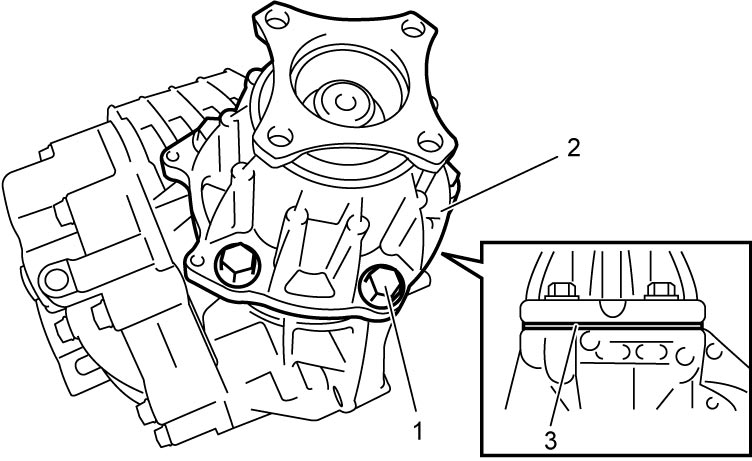

3C
| Transfer Assembly Disassembly and Reassembly |
NOTICE:
Some parts are intended to be replaced as a set. If you replace these parts individually, rather than as a set, performance may be adversely affected.
Always replace the following parts as a set or in an assembly.
•Bevel gear and pinion
•Inner and outer races of a taper roller bearing
•Inner and outer races of a taper roller bearing
Disassembly
1)Remove transfer intermediate shaft. 
2)Remove transfer output retainer assembly (2) and shim (3).


 "Expand image")
| 1. | Transfer output retainer bolts |
3)Remove transfer output retainer assembly.
4)Separate transfer right case (2) from transfer left case (3).
 "Expand image")
| 1. | Transfer case bolts |
5)Remove reduction drive gear assembly (1) and reduction driven gear assembly (2) from transfer left case (3).
 "Expand image")
6)Using special tool, bearing puller (3) and hydraulic press (4), remove right and left bearings (1) from reduction drive gear.
 "Expand image")
7)Using special tool, bearing puller (3) and hydraulic press (4), remove left bearing (1) and bevel gear (2) from reduction driven gear.

 "Expand image")
8)Grind portion “a” of right bearing (1) using grinder (3) as shown.
NOTICE:
If you grind the bearing too much, you will damage the reduction driven gear.
Limit the amount of grinding to the minimum amount if necessary.
 "Expand image")
| 2. | Reduction driven gear |
9)Use chisel (1) to break the thinnest portion of bearing inner race (2) and remove bearing.
 "Expand image")
10)Remove bearing outer race (1) and shim (2) from transfer left case (3).
 "Expand image")
11)Remove bearing outer race (1) and shim (2) from transfer right case (3).
 "Expand image")
12)Remove oil strainer from transfer right case.
13)Remove oil pump outer cover bolts (1) and then remove the following parts from transfer right case (6).
•Oil pump outer cover (2)
•Oil pump outer rotor (3)
•Oil pump inner rotor (4)
•Oil pump drive pin (5)
•Oil pump outer rotor (3)
•Oil pump inner rotor (4)
•Oil pump drive pin (5)
 "Expand image")
14)Using special tool, remove oil seals (1) from transfer right case (2).
 "Expand image")
 "Expand image")
Reassembly
1)Using special tool, install new oil seal (2) to transfer left case (1) directing oil seal lip as shown.
 "Expand image")
2)Using special tools, install new oil seal (2) to transfer left case (1) directing oil seal lip as shown.
 "Expand image")
3)Using special tool, install new oil seal (2) to the specified position in transfer right case (1), directing oil seal lip as shown.
Oil seal (outer) installing position (from bearing end position to oil seal surface)
“a”: 16 – 17 mm (0.63 – 0.67 in.)
 "Expand image")
4)Using special tool, install new oil seal (2) to the specified position in transfer right case (1), directing oil seal lip as shown.

Oil seal (inner) installing position (depth from bearing installation surface of case to oil seal surface)
“a”: 3 – 4 mm (0.12 – 0.16 in.)
 "Expand image")
6)Install the following parts to transfer right case (5).
•Oil pump inner rotor (1)
•Oil pump outer rotor (2)
•Oil pump outer cover (3)
•Oil pump drive pin (4)
•Oil pump outer rotor (2)
•Oil pump outer cover (3)
•Oil pump drive pin (4)
7)Tighten new oil pump outer cover bolts (6) to specified torque.
NOTICE:
The oil pump cover bolts are pre-coated with adhesive. If these bolts are reused, they may work loose.
Replace the oil pump cover bolts with new ones whenever they are removed.
 "Expand image")
8)Install new O-ring and oil strainer to transfer right case.
9)Using special tools and hydraulic press, install right bearing (1) to reduction driven gear (2).
 "Expand image")
10)Using special tools and hydraulic press, install bevel gear (1) to reduction driven gear (2).
 "Expand image")
11)Using special tools and hydraulic press, install left bearing (1) to reduction driven gear (2).
 "Expand image")
12)Using special tool, bearing puller (3) and hydraulic press (4), install bearings (1) to reduction drive gear (2).
 "Expand image")
13)Select reduction driven gear shim using the following procedure:
a)Calculate thickness of shim “e” with calculating formula.
“e” = (“b” + “c”) – “a” + 0.1 mm (0.004 in.)
“e” = (“b” + “c”) – “a” + 0.1 mm (0.004 in.)
•“a”: distance between outer race end of reduction driven gear bearings (mm (in.))
•“b”: depth of bearing retaining surface on transfer left case (2) (mm (in.))
•“c”: depth of bearing retaining surface on transfer right case (3) (mm (in.))
•“b”: depth of bearing retaining surface on transfer left case (2) (mm (in.))
•“c”: depth of bearing retaining surface on transfer right case (3) (mm (in.))
 "Expand image")
| 1. | Reduction driven gear |
b)Select a shim which is close to half thickness of the calculated value (necessary shim thickness) from the available shims to install it between bearing and case at each of right and left sides.
Available reduction driven gear left shim (2) thickness
| Select shim | |
|---|---|
| 1.00 mm (0.039 in.) | 1.25 mm (0.049 in.) |
| 1.05 mm (0.041 in.) | 1.30 mm (0.051 in.) |
| 1.10 mm (0.043 in.) | 1.35 mm (0.053 in.) |
| 1.15 mm (0.045 in.) | 1.40 mm (0.055 in.) |
| 1.20 mm (0.047 in.) | 1.45 mm (0.057 in) |
Available reduction driven gear right shim (4) thickness
| Select shim | |
|---|---|
| 0.60 mm (0.024 in.) | 0.85 mm (0.033 in.) |
| 0.65 mm (0.026 in.) | 0.90 mm (0.035 in.) |
| 0.70 mm (0.028 in.) | 0.95 mm (0.037 in.) |
| 0.75 mm (0.030 in.) | 1.00 mm (0.039 in.) |
| 0.80 mm (0.031 in.) | 1.05 mm (0.041 in.) |
 "Expand image")
 "Expand image")
| 1. | Reduction driven gear left bearing outer race |
| 3. | Transfer left case |
| 5. | Transfer right case |
| 6. | Reduction driven gear right bearing outer race |
c)Install reduction driven gear (1) to transfer left case (2).

NOTE:
Do not install reduction drive gear yet.
 "Expand image")
d)Install transfer right case (1) to left case and tighten transfer case bolts (2) to specified torque.
NOTE:
Do not apply sealant to mating surface of transfer left case (3) and transfer right case in this stage.
 "Expand image")
e)Install shim (1) selected in Transfer Output Retainer Assembly Disassembly and Reassembly and transfer output retainer (2) to transfer case (3) and tighten retainer bolts (4) to specified torque.
 "Expand image")
f)Using dial gauge, measure play of flange (2) rotative direction. If check result is not as specified, change distribution of reduction driven gear right and left shims installed on transfer left case and transfer right case in Step b) and measure its play again.
Bevel pinion & bevel gear backlash
0.1 – 0.15 mm (0.004 – 0.006 in.)
 "Expand image")
| 1. | Transfer output retainer |
g)Remove transfer output retainer and check teeth contact of bevel gear (1).
i)After cleaning tooth surface of bevel gear, paint them with gear marking compound evenly using brush or sponge etc.
ii)Install shim selected in Transfer Output Retainer Assembly Disassembly and Reassembly and transfer output retainer to transfer case and tighten retainer bolts to specified torque.
iii)Turn transfer output flange clockwise and counterclockwise repeatedly, and remove transfer output retainer assembly and shim from transfer assembly.
iv)Bring painted part up and check contact pattern referring to the following chart. If contact pattern is not normal, readjust or replace if necessary according to instruction in chart.
 "Expand image")
NOTE:
•Be careful not to turn bevel gear more than one full revolution, as it will hinder accurate check.
•If bevel gear backlash and bevel pinion shims are adjusted properly, correct tooth contact should be provided.
If correct tooth contact is not provided even when they are adjusted properly, however, there may be an abnormal condition in gear tooth, transfer case or retainer. Check each component and replace if necessary.
•If bevel gear backlash and bevel pinion shims are adjusted properly, correct tooth contact should be provided.
If correct tooth contact is not provided even when they are adjusted properly, however, there may be an abnormal condition in gear tooth, transfer case or retainer. Check each component and replace if necessary.
Gear tooth contact table
| Tooth contact pattern | Diagnosis and remedy |
|---|---|
 "Expand image") |
Normal |
  "Expand image") |
High contact Pinion (1) is positioned too far from the center of bevel gear (2).
•Decrease thickness of transfer output retainer shim and position pinion closer to gear center.
•Adjust bevel gear backlash to specification. |
 "Expand image") |
Low contact Pinion (1) is positioned too close to the center of bevel gear (2).
•Increase thickness of transfer output retainer shim and position pinion farther from gear center.
•Adjust bevel gear backlash to specification. |
 "Expand image") |
These contact patterns indicate that the “offset” of reduction driven gear is too much or too little. The remedy is to change the division of the reduction driven gear shim(s). |
  "Expand image") |
These contact patterns, located on toe or heel on both drive and coast sides, mean that 1) both pinion and gear are defective, 2) retainer is not true, or 3) gear is not properly seated on transfer case. The remedy is to replace the defective member. |
 "Expand image") |
Irregular patterns: If the pattern is not oval, it means that bevel gear is defective. High or low spots on tooth surfaces or on the seat of bevel gear are the cause of irregular patterns appearing on some teeth. The remedy is to replace the pinion and gear set and, if the seat is defective, so is transfer case. |
14)Separate transfer right case from transfer left case.
15)Install reduction drive gear assembly (1) and reduction driven gear assembly (2) to transfer left case (3).
 "Expand image")
16)Clean mating surface of right and left cases, and apply sealant to right case as shown in figure.
Sealant amount for right case
“a”: 1.5 mm (0.059 in.)
 "Expand image")
17)Install transfer right case (1) to transfer left case (3) and tighten transfer case bolts (2) to specified torque.
18)Install shim (1) selected in Transfer Output Retainer Assembly Disassembly and Reassembly and transfer output retainer (2) to transfer case (3) and tighten retainer bolts (4) to specified torque.